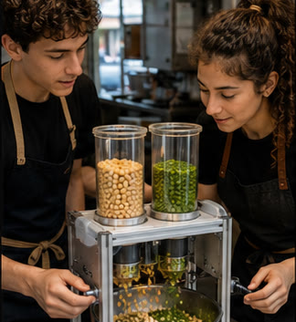
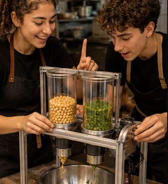
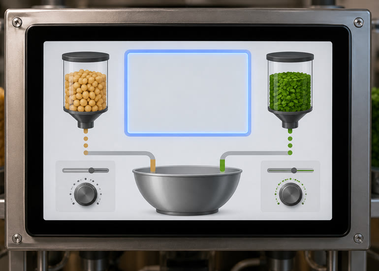
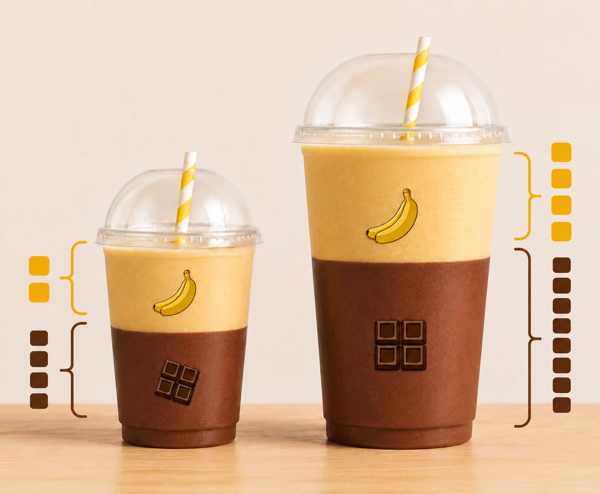

أي شخصية تريدون أن ترافقكم؟
🚨 الورديّة قد بدأت!
أهلًا وسهلًا بكم في أروع محل حمص في المدينة!
الوصفة الكاملة تشمل الكثير من المكونات، لكن السر هو هذا:
النسبة بين كمية الحمص وكمية الخضار هي دائمًا 3 : 2.
أي إنه مقابل كل كوبين من حبوب الحمص، يجب إضافة 3 أكواب بالضبط من الخضار المقطّعة.
والآن، إلى المطبخ! هناك زبونان ينتظران.
في كل طلبية، اضغطوا على الحمص أو الخضار لملاءمة الكميات والحفاظ على النسبة.
لنبدأ؟
اضغطوا على كوب البقدونس والحمص بحسب النسبة الصحيحة في الوصفة السرية. عندما تنتهون، اضغطوا على زر "قدّموا للزبون"
هل لاحظتم ما حدث في الكشك؟
في كل طلبية تغيّرت الكميات، لكن النسبة بينها بقيت ثابتة.
وهذا يحدث كثيرًا، وليس في الوصفات فقط...
عندما نريد زيادة الكميات أو تقليلها والحفاظ على نفس النسبة،
يمكننا الاستعانة بتعابير جبرية بدلًا من حساب كل حالة من جديد.
ماذا حدث في محل الحمص؟
ربى - صاحبة محل الحمص، وجميل - شريكها، أنهيا يوم العمل الشاقّ منهكَين من كثرة الحسابات!
لم تتوقف الطلبيات، وفي كل طلبية كانت هناك كمية مختلفة من الحمص.
وفجأة...

اعتقد جميل أن هذا خيال علمي، لكن ربى لم تستسلم.
فقاما ببناء نموذج أولي وتعليمه أهمّ قاعدة...
النسبة بين الحمص والخضار يجب أن تكون 2 : 3 !



2x : 3xماذا يمكن أن نتعلم من ذلك؟
آلة الحمص (العبقرية) التي ابتكرتها ربى وجميل تعلِّمنا مبدأً مهمًا:
عندما تكون النسبة ثابتة لكن الكميات تتغيّر، يمكن استخدام التعابير الجبرية لتمثيل النسبة.
مثلًا، في وصفتنا، النسبة بين كمية الحمص وكمية الخضار هي 2 : 3،
ولذلك يمكن تمثيل الكميات 2x أكواب حمص و- 3x أكواب خضار.
كيف يمكن إذًا استخدام التعابير الجبرية لتمثيل النسبة في الحالات المختلفة؟
تعالوا نرى بعض الأمثلة.
كيف نمثّل النسبة بواسطة تعبير جبري؟
اقلبوا البطاقات واكتشفوا:
مساحة المثلث ABC هي 50 سم مربع
درجة لون التوركيز المثالية للجدار
وصفة مخفوق "بورا بورا"

هل أنتم مستعدون للمحاولة بأنفسكم؟
المشروب المميز في كشك المخفوقات الجديد هو مخفوق الموز والشوكولاتة، طبعًا!
وصفة المخفوق المثالي تحتاج إلى:
ملعقتين من مهروس الموز مقابل كل 4 ملاعق شوكولاتة (النسبة 2 : 4).
اقترحت لينا، صاحبة الكشك، أن كل زبون يمكنه اختيار حجم الكوب.
أي تعبير جبري سيساعد لينا على تمثيل عدد الملاعق من كل مكوّن؟
سنبدأ بالتمرين بعد قليل،
لكن قبل ذلك، تعالوا نحلّ تمرينًا واحدًا معًا
تعالوا نحل التمرين الأول معًا
تأملوا في التمرين التالي. لا تحلوه، فقط انظروا إلى المعطيات وفكروا في اتجاه الحل.
عند الدخول إلى مجمّع ألعاب الفيديو "أركايد سيتي"، يحصل كل زائر على بطاقة قُرعة.
بعض البطاقات تمنح لعبة مجانية، والبقية لا تمنح شيئًا.
النسبة بين عدد البطاقات الرابحة وعدد البطاقات غير الرابحة هي 1 : 5.
رامي، مدير صالة الألعاب، متردد بشأن عدد بطاقات القُرعة الإجمالي التي يجب عليه تحضيرها.
أي من الإمكانيات التالية يمكن أن يمثّل عدد بطاقات القُرعة التي تم تحضيرها؟
اختاروا كلّ الإجابات الصحيحة.
حسنًا، أنا أصلًا لا أحب هذه اللعبة.
عند الدخول إلى مجمّع ألعاب الفيديو "أركايد سيتي"، يحصل كل زائر على بطاقة قُرعة.
بعض البطاقات تمنح لعبة مجانية، والبقية لا تمنح شيئًا.
النسبة بين عدد البطاقات الرابحة وعدد البطاقات غير الرابحة هي 1 : 5.
رامي، مدير صالة الألعاب، متردد بشأن عدد بطاقات القُرعة الإجمالي التي يجب عليه تحضيرها.
أي من الإمكانيات التالية يمكن أن يمثّل عدد بطاقات القُرعة التي تم تحضيرها؟
اختاروا كلّ الإجابات الصحيحة.
لكي نفهم كيف يمكن تكبير الكميات مع الحفاظ على نفس النسبة، نبدأ بأصغر كمية ممكنة: ما هو أصغر عدد من البطاقات يمكن تحضيره مع الحفاظ على النسبة؟
عند الدخول إلى مجمّع ألعاب الفيديو "أركايد سيتي"، يحصل كل زائر على بطاقة قُرعة.
بعض البطاقات تمنح لعبة مجانية، والبقية لا تمنح شيئًا.
النسبة بين عدد البطاقات الرابحة وعدد البطاقات غير الرابحة هي 1 : 5.
رامي، مدير صالة الألعاب، متردد بشأن عدد بطاقات القُرعة الإجمالي التي يجب عليه تحضيرها.
أي من الإمكانيات التالية يمكن أن يمثّل عدد بطاقات القُرعة التي تم تحضيرها؟
اختاروا كلّ الإجابات الصحيحة.
في النسبة 1 : 5 توجد بطاقة واحدة رابحة و-5 بطاقات غير رابحة.
لذلك، أصغر عدد من البطاقات هو: 1 + 5 = 6
يمكننا من الآن أن نرى أن الإجابة أ مناسبة. نتابع لنفحص إن كانت هناك إجابات مناسبة أخرى.
عند الدخول إلى مجمّع ألعاب الفيديو "أركايد سيتي"، يحصل كل زائر على بطاقة قُرعة.
بعض البطاقات تمنح لعبة مجانية، والبقية لا تمنح شيئًا.
النسبة بين عدد البطاقات الرابحة وعدد البطاقات غير الرابحة هي 1 : 5.
رامي، مدير صالة الألعاب، متردد بشأن عدد بطاقات القُرعة الإجمالي التي يجب عليه تحضيرها.
أي من الإمكانيات التالية يمكن أن يمثّل عدد بطاقات القُرعة التي تم تحضيرها؟
اختاروا كلّ الإجابات الصحيحة.
رأينا أنه يمكن توسيع النسبة بعدد مختلف من المرات.
لكن كيف يمكن تمثيل جميع الاحتمالات دفعة واحدة؟
نستخدم x لتمثيل عامل التوسيع (العدد الذي يبيّن كم مرة كبّرنا العددين في النسبة).
عند الدخول إلى مجمّع ألعاب الفيديو "أركايد سيتي"، يحصل كل زائر على بطاقة قُرعة.
بعض البطاقات تمنح لعبة مجانية، والبقية لا تمنح شيئًا.
النسبة بين عدد البطاقات الرابحة وعدد البطاقات غير الرابحة هي 1 : 5.
رامي، مدير صالة الألعاب، متردد بشأن عدد بطاقات القُرعة الإجمالي التي يجب عليه تحضيرها.
أي من الإمكانيات التالية يمكن أن يمثّل عدد بطاقات القُرعة التي تم تحضيرها؟
اختاروا كلّ الإجابات الصحيحة.
عندما نرمز إلى عامل التوسيع بـ x، نحصل على:
عدد البطاقات الرابحة: x
عدد البطاقات غير الرابحة: 5x
لذلك، عدد البطاقات الإجمالي هو:
x + 5x = 6x
عند الدخول إلى مجمّع ألعاب الفيديو "أركايد سيتي"، يحصل كل زائر على بطاقة قُرعة.
بعض البطاقات تمنح لعبة مجانية، والبقية لا تمنح شيئًا.
النسبة بين عدد البطاقات الرابحة وعدد البطاقات غير الرابحة هي 1 : 5.
رامي، مدير صالة الألعاب، متردد بشأن عدد بطاقات القُرعة الإجمالي التي يجب عليه تحضيرها.
أي من الإمكانيات التالية يمكن أن يمثّل عدد بطاقات القُرعة التي تم تحضيرها؟
اختاروا كلّ الإجابات الصحيحة.
رأينا أن التعبير x + 5x = 6x يمثّل عدد البطاقات لأي عامل توسيع.
والآن نفحص ما إذا كانت الإجابة ت حالة خاصة من هذا التعبير.
هل توجد قيمة لـ x نحصل فيها على: 6 + 30 = 36 ؟
عند الدخول إلى مجمّع ألعاب الفيديو "أركايد سيتي"، يحصل كل زائر على بطاقة قُرعة.
بعض البطاقات تمنح لعبة مجانية، والبقية لا تمنح شيئًا.
النسبة بين عدد البطاقات الرابحة وعدد البطاقات غير الرابحة هي 1 : 5.
رامي، مدير صالة الألعاب، متردد بشأن عدد بطاقات القُرعة الإجمالي التي يجب عليه تحضيرها.
أي من الإمكانيات التالية يمكن أن يمثّل عدد بطاقات القُرعة التي تم تحضيرها؟
اختاروا كلّ الإجابات الصحيحة.
إذا عوّضنا x = 6 سنحصل على:
عدد البطاقات الرابحة: 6
عدد البطاقات غير الرابحة: 30
لذلك، عدد البطاقات الإجمالي سيكون:
6 + 30 = 36
بالتالي، هذه الإجابة مناسبة أيضًا.
عند الدخول إلى مجمّع ألعاب الفيديو "أركايد سيتي"، يحصل كل زائر على بطاقة قُرعة.
بعض البطاقات تمنح لعبة مجانية، والبقية لا تمنح شيئًا.
النسبة بين عدد البطاقات الرابحة وعدد البطاقات غير الرابحة هي 1 : 5.
رامي، مدير صالة الألعاب، متردد بشأن عدد بطاقات القُرعة الإجمالي التي يجب عليه تحضيرها.
أي من الإمكانيات التالية يمكن أن يمثّل عدد بطاقات القُرعة التي تم تحضيرها؟
اختاروا كلّ الإجابات الصحيحة.
نفحص أيضًا الإجابة ث:
لكي نفحص ما إذا كان التعبير مناسبًا، ننظر إلى الجزأين اللذين يتكوّن منهما: 2x و-5x.
أي نسبة يمثّلان؟
عند الدخول إلى مجمّع ألعاب الفيديو "أركايد سيتي"، يحصل كل زائر على بطاقة قُرعة.
بعض البطاقات تمنح لعبة مجانية، والبقية لا تمنح شيئًا.
النسبة بين عدد البطاقات الرابحة وعدد البطاقات غير الرابحة هي 1 : 5.
رامي، مدير صالة الألعاب، متردد بشأن عدد بطاقات القُرعة الإجمالي التي يجب عليه تحضيرها.
أي من الإمكانيات التالية يمكن أن يمثّل عدد بطاقات القُرعة التي تم تحضيرها؟
اختاروا كلّ الإجابات الصحيحة.
2x و-5x يمثّلان النسبة 2 : 5 .
لكن في السؤال معطى أن النسبة هي 1 : 5،
ولذلك الإجابة ث غير صحيحة.
النسبة هي 1 : 5، وهذه الواحدة هي... أنا!
ماذا بقيَ عالقًا في عقولنا؟
سؤال بسيط للإحماء قبل أن نتقدم
تعمل سمر وحنان في بوفيه سينما "النجوم".
حتى لا يحترق البوبكورن، يجب إضافة 6 أكواب من حبوب الذرة بالضبط مقابل كل كوب زيت.
أ. لحساب الكميات لعبوات البوبكورن بأحجام مختلفة، اقترحت حنان أن نرمز إلى عامل التوسيع بـ x.
أي تعبير سيساعدهما في الحفاظ على النسبة 1:6 في كل حجم من العبوات؟ اضغطوا على العبوة المناسبة.
تعمل سمر وحنان في بوفيه سينما "النجوم".
حتى لا يحترق البوبكورن، يجب إضافة 6 أكواب من حبوب الذرة بالضبط مقابل كل كوب زيت.
ب. عامل التوسيع هو x، ولذلك التعبير الجبري هو x : 6x.
كم كوبًا من الزيت وحبوب الذرة سيكون بالمجمل في العبوة؟ أكملوا:
تعمل سمر وحنان في بوفيه سينما "النجوم".
حتى لا يحترق البوبكورن، يجب إضافة 6 أكواب من حبوب الذرة بالضبط مقابل كل كوب زيت.
ت. تريد سمر وحنان تحضير عبوة كبيرة تحتوي على 48 كوبًا من حبوب الذرة.
كم كوبًا من الزيت عليهما إضافته للحفاظ على النسبة 1 : 6؟
 أكواب زيت
48 كوبًا من الحبوب
أكواب زيت
48 كوبًا من الحبوب